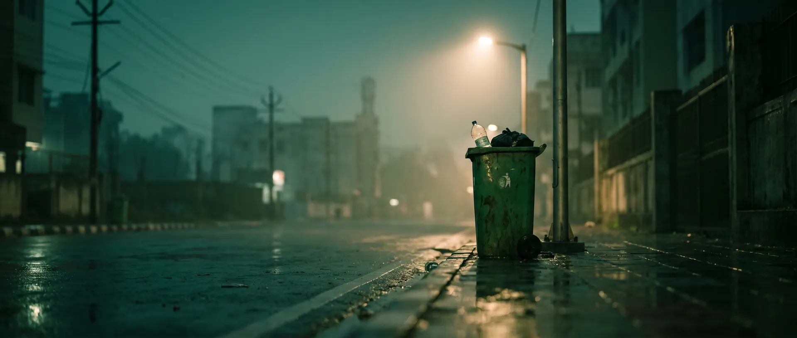
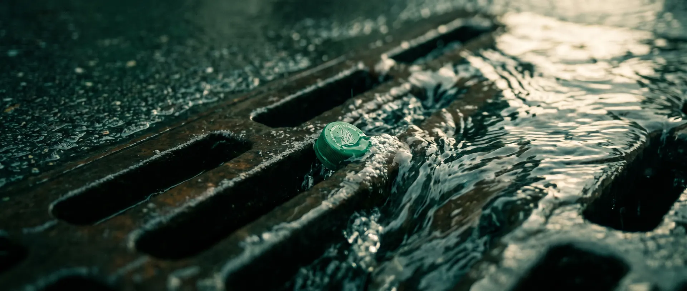
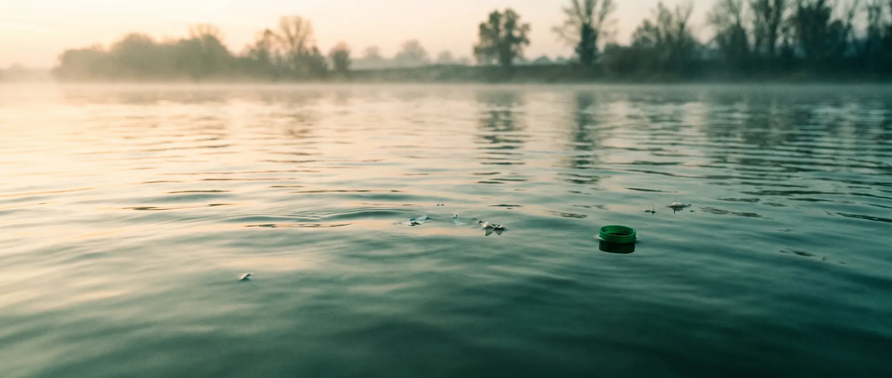
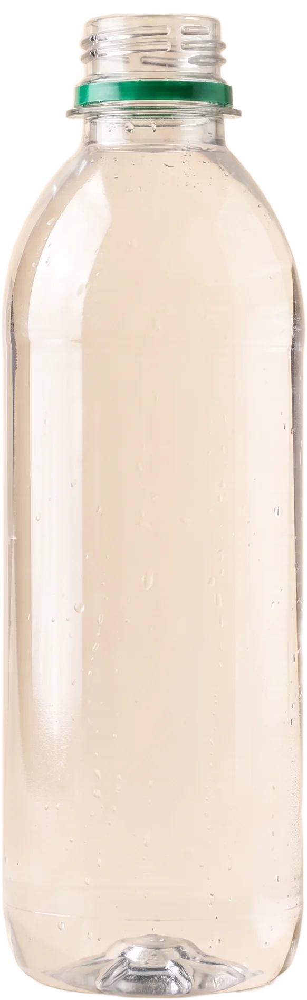
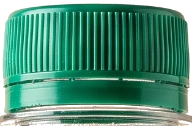

The Tethered Cap Mandate · India
This is
a love story.
Until you
opened it.


Every bottle you’ve ever finished ended exactly like this.
scroll
You drank. You binned it.
The bottle went off to its second life.
The cap
never made it.
Too small for the sorting machines.
It slips through every screen.
Light enough to blow out of bins,
roll into drains, ride every river.
Bottles sink and get collected.
Caps float. Caps escape.